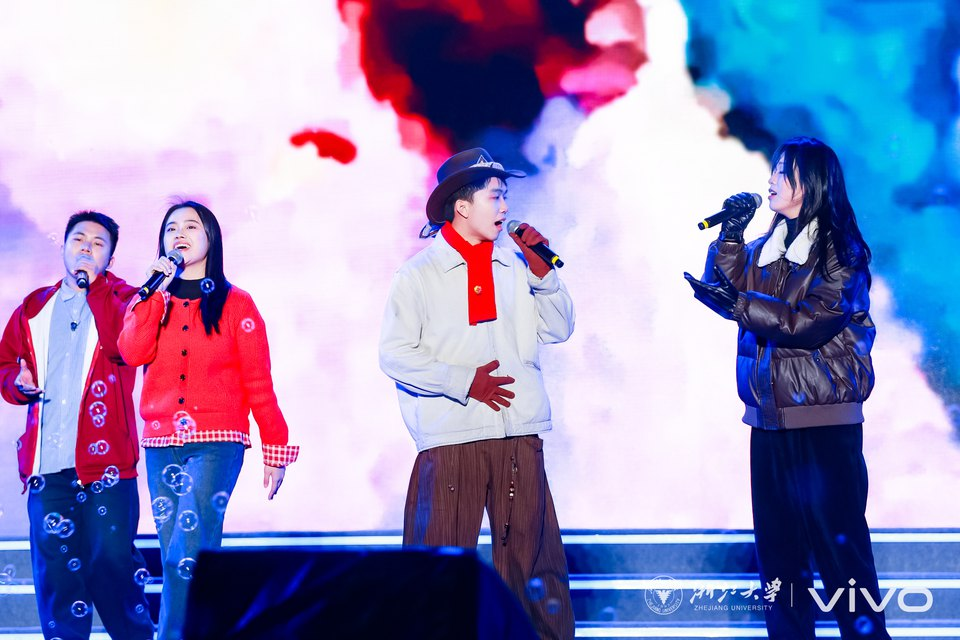
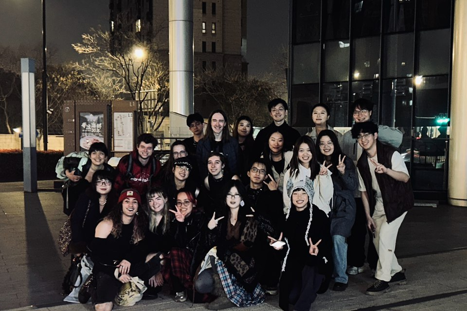
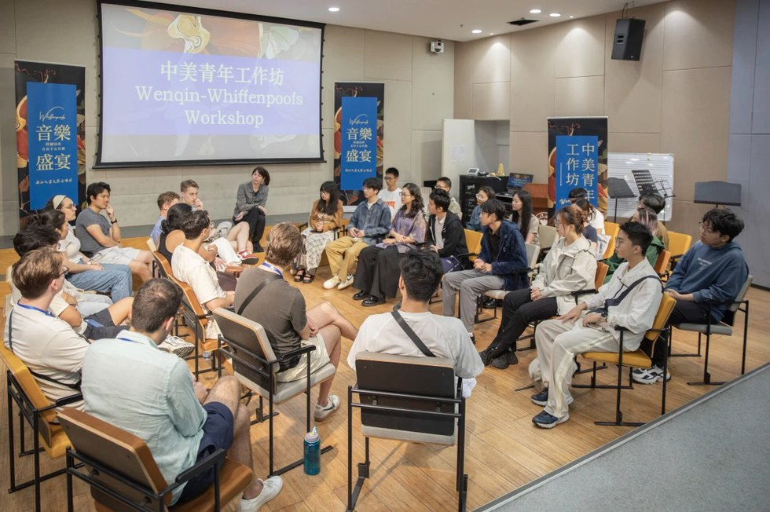
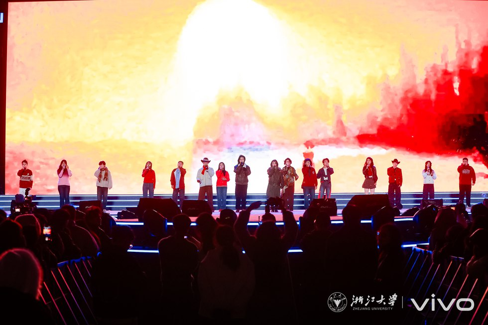
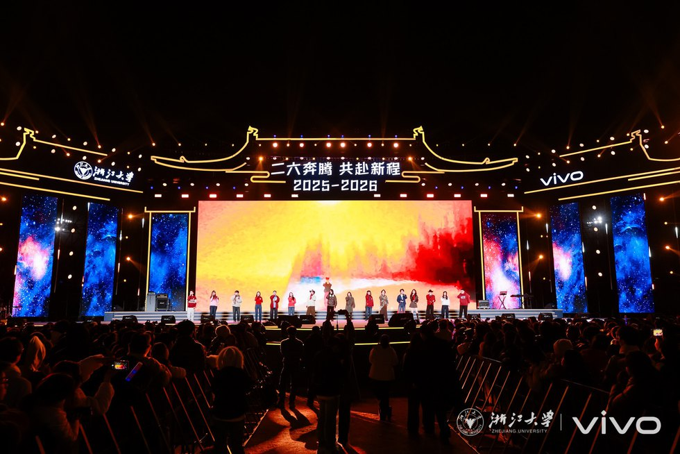
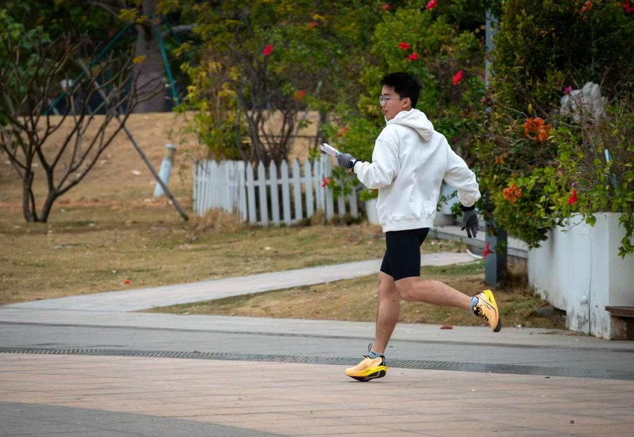
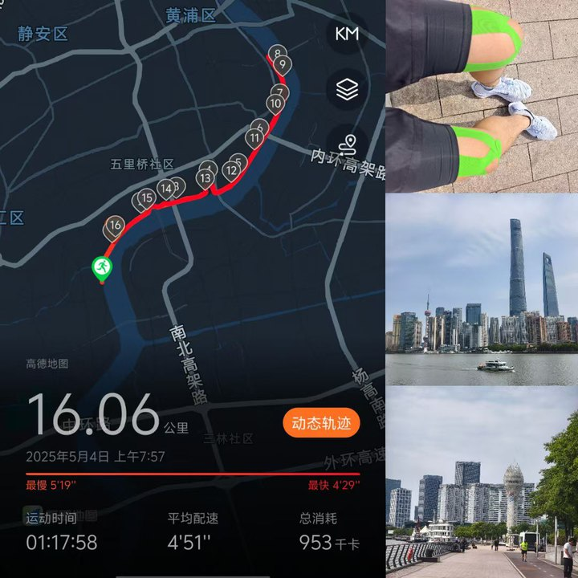

科研之外
音乐、摄影与户外记录
这个页面与学术作品集保持一点距离，但仍然容易找到。它记录那些塑造我观察细节、协作方式和长期节奏感的兴趣。

音乐
演出与协作
音乐是我最具社交性的兴趣之一。我参加过校级万人演出，也与 Stanford 的 The Harmonics 和 Yale 的 Whiffenpoofs 进行过交流活动。演出训练了我的注意力、节奏感、聆听能力，以及在团队中保持清晰声部的能力。




摄影
靠近观看
摄影是练习构图、耐心和视觉判断的安静方式。它也自然连接到我对成像的兴趣：场景如何被记录、解释并形成可观察的证据。


运动
定向与耐力
户外活动为长期面对屏幕的学习和项目工作提供了平衡：空间感、配速，以及在变化条件下持续判断和决策。

